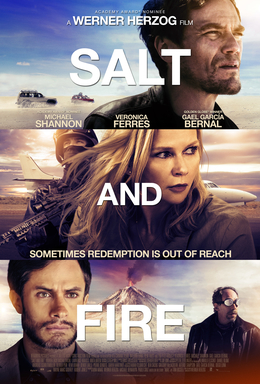

Werner Herzog
2016
98 minutes
This is a Herzog film with Michael Shannon as the eco-terrorist sorta bad guy antagonist, who kidnaps three scientists and strands one of them along with his two adopted native blind children at the scene of an environmental disaster to drive home the need for saving our planet. Alleged sex pest and cosmologist Lawrence Krauss also appears as a distraction in a wheelchair for most of the film.
Let's face it. Herzog really just wanted to make a film where much of the dramatic action is set in a toxic salt flat, with bonus volcanos. It's well-meaning and Michael Shannon-ish. For better or worse, the toxic salt flat will be the star of this film. It looks to you to be a good place to race cars.
There's an anamorphic fresco that plays a key role in this as well--one of those images that looks distorted and stretched when viewed straight-on but which appears normal when you view it from a certain angle. This reminds you of a festival in Little Italy in your city which features sidewalk artists creating quite a lot of such frescoes. Depressingly, you remember one of these frescoes in front of one of your favorite Italian delis which featured a portrait of Donald Trump while he was running for his first term for president, which appeared to be possibly commissioned by the restaurant. Cannolis from that place never tasted quite the same to you after that. The end of this film makes you fear for the future of the planet and mourn for your lost cannolis.
Time to choose something different: